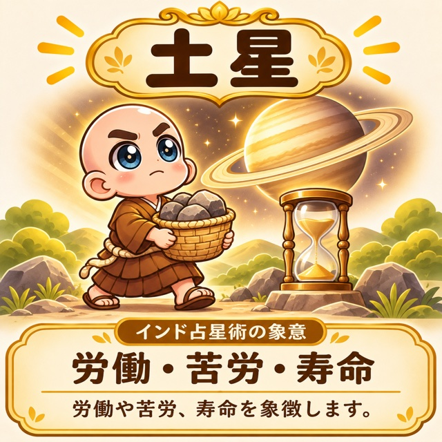

<!doctype html><html lang="ja"><meta charset="utf-8"><meta name="viewport" content="width=device-width,initial-scale=1"><title>インド占星術 画像一覧</title><style>body{background:#f7f5ef;color:#263145;font-family:system-ui;margin:24px}main{max-width:1100px;margin:auto}h1{font-size:24px}h2{font-size:18px;margin-top:28px}.grid{display:grid;grid-template-columns:repeat(4,1fr);gap:16px}figure{margin:0;background:white;padding:8px;border:1px solid #e6dfd0;border-radius:12px}img{display:block;width:100%;height:auto;aspect-ratio:1;object-fit:contain}figcaption{font-size:13px;text-align:center;margin:8px 0}@media(max-width:650px){.grid{grid-template-columns:repeat(2,1fr)}body{margin:14px}}.new-grid{grid-template-columns:repeat(3,1fr)}@media(max-width:650px){.new-grid{grid-template-columns:1fr}}</style><main><h1>インド占星術 画像一覧</h1><p>全25枚を同じキャラ・画風で制作。天体7枚もインド占星術専用です。</p><h2 id="planet-images">7天体の統一デザイン</h2><div class="grid new-grid"><figure><figcaption>太陽</figcaption></figure><figure><figcaption>月</figcaption></figure><figure><figcaption>水星</figcaption></figure><figure><figcaption>金星</figcaption></figure><figure><figcaption>火星</figcaption></figure><figure><figcaption>木星</figcaption></figure><figure><figcaption>土星</figcaption></figure></div><h2>インド占星術の専門項目</h2><div class="grid"><figure><figcaption>ラグナ</figcaption></figure><figure><figcaption>ナクシャトラ</figcaption></figure><figure><figcaption>ダシャー</figcaption></figure><figure><figcaption>ナヴァムシャ</figcaption></figure><figure><figcaption>ラーフ</figcaption></figure><figure><figcaption>ケートゥ</figcaption></figure></div><h2>12星座</h2><div class="grid"><figure><figcaption>牡羊座</figcaption></figure><figure><figcaption>牡牛座</figcaption></figure><figure><figcaption>双子座</figcaption></figure><figure><figcaption>蟹座</figcaption></figure><figure><figcaption>獅子座</figcaption></figure><figure><figcaption>乙女座</figcaption></figure><figure><figcaption>天秤座</figcaption></figure><figure><figcaption>蠍座</figcaption></figure><figure><figcaption>射手座</figcaption></figure><figure><figcaption>山羊座</figcaption></figure><figure><figcaption>水瓶座</figcaption></figure><figure><figcaption>魚座</figcaption></figure></div></main></html>